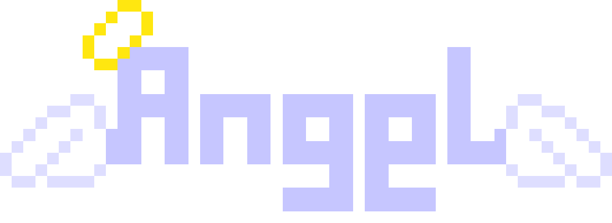
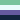
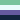

about

about me.
- Name: Klug or Eudaemonics
- Nickname: Eudiel, Euphrasie, Euphie, Euphiel, etc.
- Pronouns: ey/em/eir/emself or it/its/itself
- Birthday: December 27
- Languages: English, French, basic Japanese
- Age: Old enough to know better!


 

site history.
I launched this site in 2022 one night when I was procrastinating on a homework assignment. The world of social media has generally been in a state of flux, and after being suspended from Twitter for telling a friend to "not commit suicioyde" (spelled just like that) I think I decided I had enough of social media and wanted to make my own space on the Internet. It's been through a lot of rehauls and weird experimental phases, and frankly, I don't think this site will ever reach a "final version".
webmaster.
I write and create art as a hobby under the moniker eudaemonics, but I spend most of my time pretending to be an academic. I want to become a psychology researcher and educator someday. My interests are mostly on digital communication, informatics, and sociopsyschology.
This site was actually even previously written in RStudio's native flat-directory SSG, but I ended up getting sick of it because it was creating a lot of junk code that made me very self-conscious.
Nowadays I use Visual Studio Code like a sane person and deploy to neocities.
And as of December 24th, 2025, I also use 11ty thanks to Renkon's extremely excellent guide. I basically had everything ported over in less than an hour.
In terms of media interests, I really like the Puyo Puyo franchise and it's been my special interest for almost 10 years at this point. I have eclectic taste in anime and manga, but I'm fond of fantasy and adult dramas.
I also read a lot of mystery/detective novel fiction and I'm currently reading through a lot of honkaku and shin honkaku mystery classics as more are being translated into English.
otherkin


system.
This system is run by a lot of people in one trench coat, but we generally prefer to act as one unit. This section displays who is currently fronting and is more for fun than anything else.